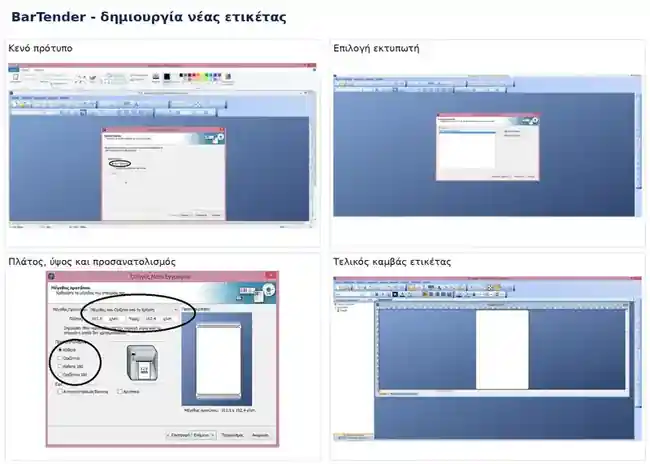

Συνοπτικός οδηγός χειρισμού του BarTender Ultra Lite, οργανωμένος σε πρακτικά cases.
Πριν ξεκινήσουμε: εγκαθιστούμε πρώτα τους drivers του εκτυπωτή. Για θερμική εκτύπωση χρησιμοποιούμε Direct Thermal, ενώ για εκτύπωση με μελανοταινία Thermal Transfer. Η σύνδεση με βάση δεδομένων απαιτεί Professional έκδοση.
BarTender
Νέα ετικέτα
Κείμενο
Barcode
Εικόνα
Αποθήκευση
Εκτύπωση
Ημερομηνία / Αυτοματισμοί
Excel
Δημιουργία νέας ετικέτας
Ανοίγουμε το BarTender και επιλέγουμε Κενό πρότυπο → Επόμενο.
Επιλέγουμε τον εκτυπωτή μας.
Επιλέγουμε Καθορισμός Προσαρμοσμένων Ρυθμίσεων.
Επιλέγουμε Ένα στοιχείο ανά σελίδα.
Στις πλευρές επιλέγουμε Ναι, εάν έχει αχρείαστο υλικό στα πλαγιά.
Επιλέγουμε Στρογγυλεμένο Ορθογώνιο.
Ορίζουμε πλάτος, ύψος και προσανατολισμό.
Στο χρώμα προτύπου δεν επιλέγουμε κάτι και πατάμε Τερματισμός.

Εισαγωγή κειμένου
Πατάμε το εργαλείο A.
Επιλέγουμε Μονή γραμμή ή Πολλαπλές Γραμμές.
Πατάμε πάνω στην ετικέτα, επιλέγουμε το αρχικό κείμενο και πατάμε Delete.
Γράφουμε το κείμενο που θέλουμε.
Αλλάζουμε μέγεθος τραβώντας τις γωνίες και μετακινούμε το πλαίσιο με το ποντίκι.
Εισαγωγή Barcode
Πατάμε το εικονίδιο Barcode → Περισσότεροι γραμμωτοί κώδικες.
Επιλέγουμε τύπο Barcode και πατάμε Επιλογή.
Ρυθμίζουμε μέγεθος και θέση.
Κάνουμε διπλό κλικ στο Barcode και από τις Προελεύσεις Δεδομένων επιλέγουμε Ενσωματωμένα Δεδομένα.
Για EAN-13 πληκτρολογούμε τα πρώτα 12 ψηφία· το 13ο υπολογίζεται αυτόματα.
Εισαγωγή εικόνας
Πατάμε το εικονίδιο εικόνας.
Επιλέγουμε Εισαγωγή από αρχείο.
Βρίσκουμε την εικόνα και πατάμε Select.
Ρυθμίζουμε μέγεθος και θέση.
Στην ίδια ετικέτα μπορούμε να συνδυάσουμε Text + Image + Barcode.
Αποθήκευση & άνοιγμα αρχείου
Αρχείο → Αποθήκευση Ως, επιλέγουμε θέση, όνομα και πατάμε Αποθήκευση.
Για άνοιγμα: Αρχείο → Άνοιγμα, βρίσκουμε το αρχείο και πατάμε Άνοιγμα.
Εκτύπωση & βασικές ρυθμίσεις
Αρχείο → Εκτύπωση.
Στο Όνομα επιλέγουμε εκτυπωτή και στην Ποσότητα τα αντίτυπα.
Πατάμε Ιδιότητες Εγγράφου → Δεσμίδα.
Στη Μέθοδο επιλέγουμε Άμεσα Θερμικό / Direct Thermal αν ο εκτυπωτής είναι μόνο θερμικός. Διαφορετικά επιλέγουμε Χρήση τρέχουσας Ρύθμισης Εκτυπωτή.
Στον Τύπο επιλέγουμε Ετικέτες με κενά / Labels with gaps.
Στο μενού Επιλογές δεν πρέπει να είναι ενεργό το Χρήση υπαρχουσών ρυθμίσεων εκτυπωτή.
Στη Σκοτεινότητα βάζουμε τιμή μεταξύ 12 και 15.
Πατάμε Εκτύπωση.
Ημερομηνία, ώρα & αυτοματισμοί
Δημιουργούμε πλαίσιο κειμένου και κάνουμε διπλό κλικ.
Προσθέτουμε νέα προέλευση δεδομένων.
Για αυτόματη ημερομηνία/ώρα επιλέγουμε το ρολόι και πατάμε Τερματισμός.
Στον Τύπο Δεδομένων επιλέγουμε τη μορφή εμφάνισης.
Για άλλους αυτοματισμούς επιλέγουμε Πεδίο εργασίας εκτύπωσης και στη συνέχεια το πεδίο που θέλουμε, π.χ. Ώρα τελευταίας τροποποίησης εγγράφου.
Σύνδεση με Excel
Απαιτείται Professional έκδοση.
Κάνουμε διπλό κλικ στο πλαίσιο κειμένου και προσθέτουμε νέα προέλευση δεδομένων.
Επιλέγουμε Πεδίο εργασίας εκτύπωσης → Επόμενο.
Πατάμε Διαμόρφωση Βάσης Δεδομένων και επιλέγουμε Microsoft Excel.
Πατάμε Διερεύνηση, βρίσκουμε το Excel και πατάμε Ολοκλήρωση.
Στην εκτύπωση πατάμε Επιλογή Εγγράφων, βρίσκουμε κωδικό ή όνομα, OK και Εκτύπωση.